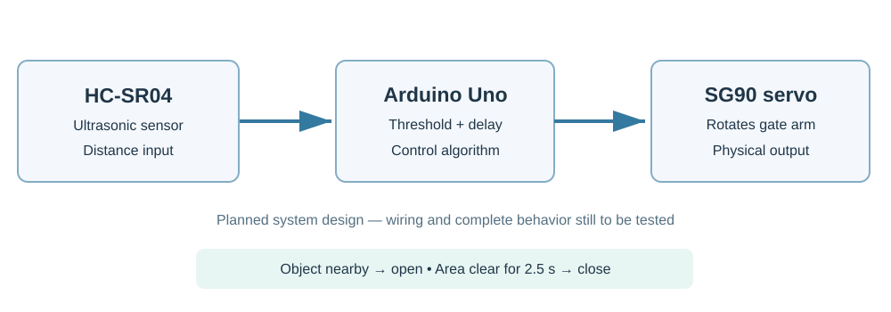

Project Description
The Smart Automatic Gate is an Arduino-based model designed to open a lightweight barrier when an object approaches. The planned system uses an HC-SR04 ultrasonic distance sensor to detect objects and an SG90 micro servo to raise or lower a gate arm.
Minimum viable project: detect objects approximately 15 cm from the sensor, open the gate automatically, keep it open while the object is nearby, and close after the detection area has remained clear for a short delay.
Stretch goals: LED status indicators, a manual pushbutton override, and more stable distance measurements to prevent unnecessary gate movement.
Project status (November 23): HC-SR04 distance sensing and SG90 servo actuation have been tested separately and integrated in an Arduino breadboard prototype. The final physical gate arm has not yet been built.
Video Demo
November 23 integration test: the HC-SR04 and SG90 are connected to the Arduino, and a hand is moved toward and away from the ultrasonic sensor to demonstrate distance-triggered control. This is an electronics prototype; a physical barrier arm will be added later.
Integration-test clip: approximately 18 seconds. Final assembled-gate demonstration will be added later.
System Diagram

Tested prototype signal flow: the HC-SR04 provides distance measurements to the Arduino. The Arduino compares distance readings with an opening threshold and controls the servo's angle. A closing delay is intended to reduce unwanted rapid closing.
Circuit Information
The table below lists the connections used in the November 23 sensor-and-servo prototype. A hand-drawn schematic and mechanical gate arm will be added for the final build.
| Component | Pin / connection | Purpose |
|---|---|---|
| HC-SR04 VCC / GND | 5V / GND | Sensor power |
| HC-SR04 TRIG | Arduino D10 | Send ultrasonic pulse |
| HC-SR04 ECHO | Arduino D11 | Measure return pulse |
| SG90 orange (signal) | Arduino D9 | Position control |
| SG90 red / brown | Arduino 5V / GND | Servo power and common ground |
Planned parts: Arduino Uno, HC-SR04 ultrasonic sensor, SG90 9g servo, breadboard, jumper wires, USB cable, and cardboard or a lightweight model gate arm. LEDs, resistors, and pushbutton are optional stretch goals.
Code
The Arduino prototype sketch uses the Servo library and ultrasonic pulse timing to actuate the SG90. The opening threshold is 15 cm; clearing begins at 20 cm; and closing is delayed by 2 seconds once the sensor reports a clear path. These are the settings in the integration sketch used as our test reference; verify exact local source before final submission.
View Arduino integration sketch
/*
Smart Automatic Gate — HC-SR04 / SG90 Integration Prototype
Mechatronics Final Project — Fall 2026
Wiring:
HC-SR04 TRIG -> D10, ECHO -> D11, VCC -> 5V, GND -> GND
SG90 signal -> D9, red -> 5V, brown -> GND
AI assistance: ChatGPT (OpenAI) helped draft and debug the control logic.
Libraries: Arduino Servo library. Ultrasonic readings use pulseIn().
Prototype only — not a safety-rated real gate.
NOTE: No echo is treated as a clear path by this classroom test sketch.
A real gate must fail safe on missing sensor data.
*/
#include <Servo.h>
const int trigPin = 10;
const int echoPin = 11;
const int servoPin = 9;
const int closedAngle = 0;
const int openAngle = 90;
const float openDistance = 15.0;
const float clearDistance = 20.0;
const unsigned long closeDelay = 2000;
Servo gateServo;
bool gateOpen = false;
bool clearTimerStarted = false;
unsigned long clearStartTime = 0;
void setup() {
pinMode(trigPin, OUTPUT);
pinMode(echoPin, INPUT);
digitalWrite(trigPin, LOW);
Serial.begin(9600);
gateServo.attach(servoPin);
gateServo.write(closedAngle);
Serial.println("Smart Automatic Gate Started");
Serial.println("Gate: CLOSED");
}
float measureDistance() {
digitalWrite(trigPin, LOW);
delayMicroseconds(2);
digitalWrite(trigPin, HIGH);
delayMicroseconds(10);
digitalWrite(trigPin, LOW);
unsigned long duration = pulseIn(echoPin, HIGH, 25000UL);
if (duration == 0) return -1;
return duration * 0.0343 / 2.0;
}
void loop() {
float distance = measureDistance();
if (distance < 0) {
Serial.println("No echo detected");
} else {
Serial.print("Distance: ");
Serial.print(distance);
Serial.println(" cm");
}
if (distance > 0 && distance <= openDistance) {
clearTimerStarted = false;
if (!gateOpen) {
gateServo.write(openAngle);
gateOpen = true;
Serial.println("GATE OPENING");
}
} else if (gateOpen && (distance < 0 || distance >= clearDistance)) {
if (!clearTimerStarted) {
clearStartTime = millis();
clearTimerStarted = true;
Serial.println("Path clear - waiting 2 seconds");
}
if (millis() - clearStartTime >= closeDelay) {
gateServo.write(closedAngle);
gateOpen = false;
clearTimerStarted = false;
Serial.println("GATE CLOSING");
}
} else {
clearTimerStarted = false;
}
delay(100);
}
AI acknowledgement: ChatGPT (OpenAI) assisted with drafting and debugging the prototype sketch; the Arduino Servo library is also used.
Reflection and Future Improvements
Interim reflection: The SG90 servo worked with the Servo Sweep example, and the HC-SR04 returned distance readings in centimeters in the Serial Monitor. We then combined both components in a breadboard prototype and recorded a short integration demonstration. Testing each component separately made integration easier to troubleshoot.
Future improvements: attach a lightweight gate arm; validate repeatable open/close operation with the arm installed; filter noisy or missing sensor readings; optionally add LED indicators or a manual override. The classroom model is not suitable for use as a real access-control gate.
Project Progress Check In #1 (November 23)
Progress and results
The project is on schedule and has advanced beyond the initially planned individual component tests. The SG90 servo was tested using Arduino's Servo Sweep example. The HC-SR04 sensor was connected to the Arduino Uno and tested separately: the Serial Monitor displayed changing distance measurements as a hand moved near the sensor. After both individual tests, the sensor and servo were wired together and an approximately 18-second integration demonstration was recorded. The physical barrier arm has not yet been built.


Video evidence: See the integration-test recording in the Video Demo section.
Research and comparison
SunFounder's Arduino Automatic Barrier Gate Project with Ultrasonic Sensor V2 shows a similar sensor-controlled servo barrier, with a traffic-light LED module and display. Our current prototype uses an HC-SR04 and SG90 with simpler distance-triggered control, without indicators or a completed gate arm. This source provides ideas for later improvements, but the commercial tutorial is not evidence that our own mechanical system has been completed.
Reference: SunFounder, Arduino Automatic Barrier Gate Project with Ultrasonic Sensor V2, accessed November 23, 2026.
Schedule, risks, and next steps
We met the Check-in #1 goal of testing the sensor and servo and additionally recorded an integrated demonstration. Before Check-in #2 on November 30, we plan to attach a lightweight gate arm, test repeatable opening and closing, monitor for unreliable distance readings, and revise the design if the motor struggles under load. Main risks are ultrasonic measurement noise, insufficient servo power, and mounting/alignment of the gate arm.
Project Progress Check In #2 (due November 30)
Planned next checkpoint: assemble and test the lightweight physical gate arm; verify sensor-triggered opening and delayed closing with the mechanism attached; and assess reliability, sensor filtering, power requirements, and any revised goals.